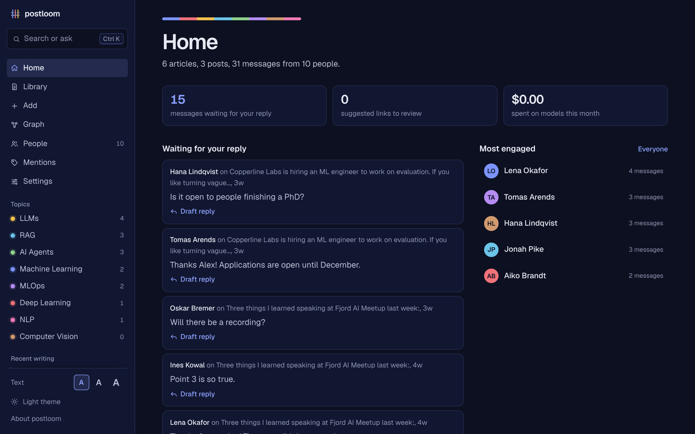
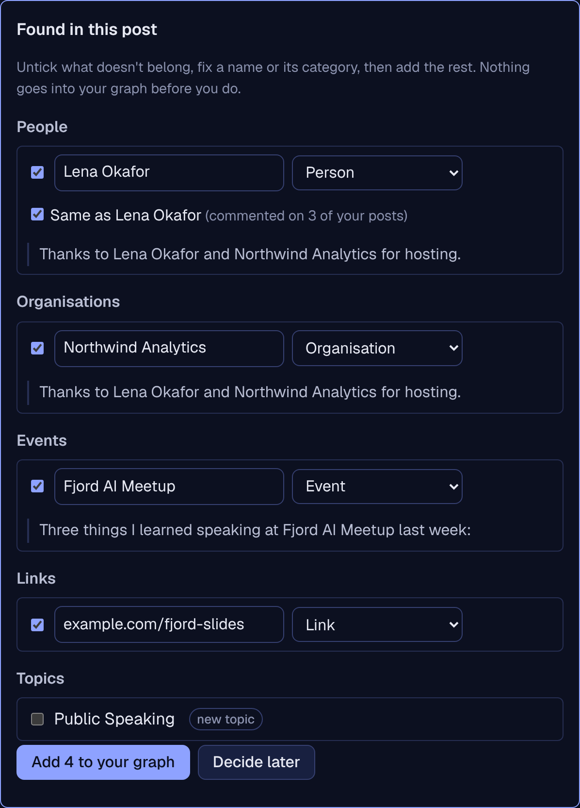
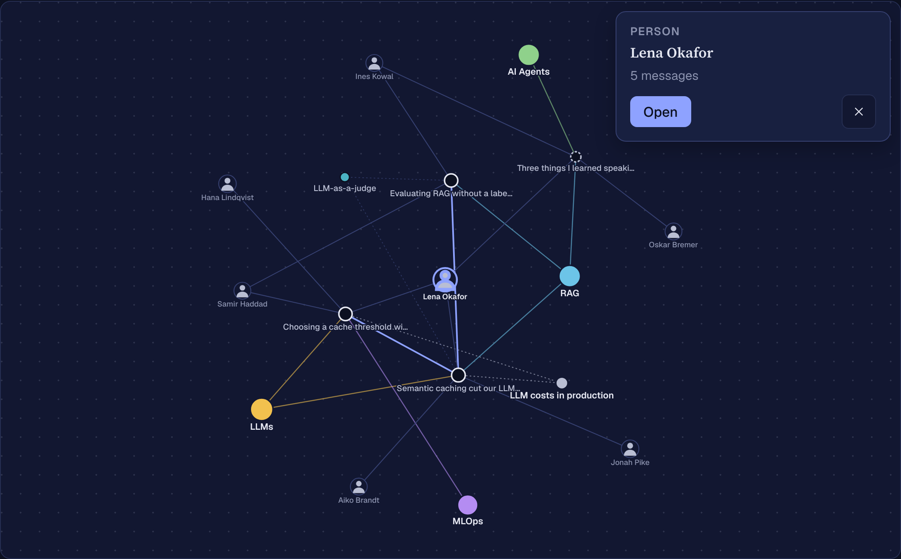
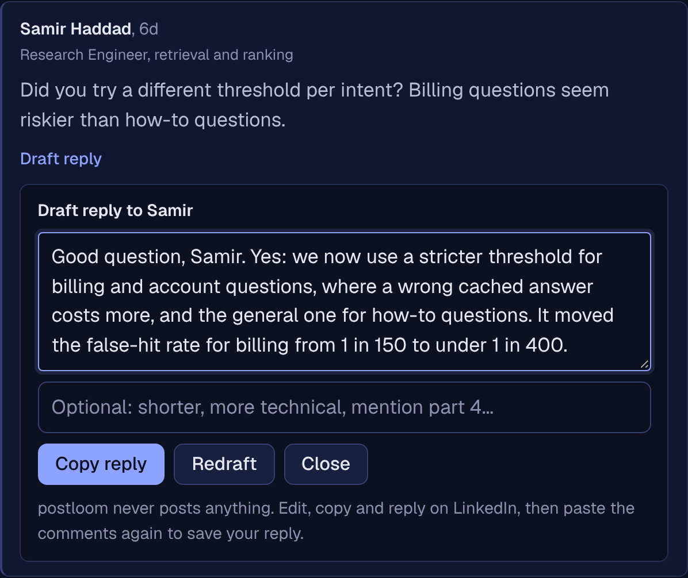
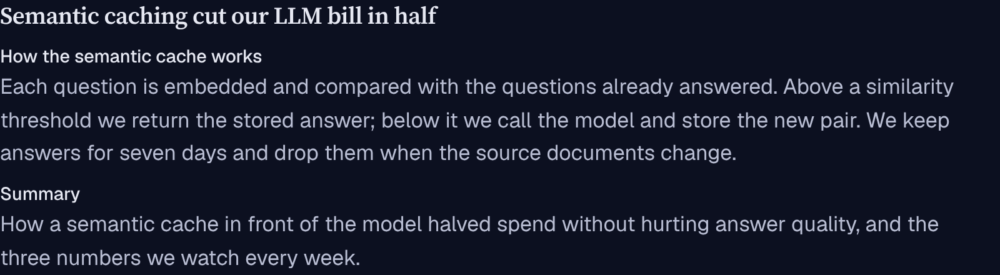

Who asked about the cache threshold in spring?
LinkedIn shows your activity one post at a time. Finding one comment means scrolling back months.
For people who write on LinkedIn
postloom keeps your articles, posts and every comment under them, with the people who wrote them, in one private library on your computer. Find anything again, ask questions about it, and answer the people waiting for a reply.

The problem
A post does well for three days. Then its comments, the questions, the people who might hire you or build with you, sink under everything that came after.
Who asked about the cache threshold in spring?
LinkedIn shows your activity one post at a time. Finding one comment means scrolling back months.
Did I ever answer Samir?
Replies get lost between notifications. Nothing tells you which questions are still open.
What have I already written about evaluation?
Your own articles become hard to search once there are more than a handful.
How it works
You copy from LinkedIn and paste into postloom. It does the reading, the filing and the linking, and asks you before anything goes into your library.
1Paste
Messy text is fine. postloom restores the headings, lists and code of an article, recognises who replied to whom in a comment section, and reads letters from "bold text" converters like any other.

2Confirm
People, organisations, events, methods and links are proposed with the sentence they come from. Untick, rename or recategorise, then add the rest. Nothing enters your graph before you say so.

3Remember
Each person gets a page with everything they said under your posts. The graph shows how your writing hangs together; focus on anyone or anything to see what surrounds it.

4Ask and reply
Questions are answered from your own articles, posts and comments, with numbered sources you can open. When someone is waiting, postloom drafts a reply from the article and the whole thread.


5Images and video
Add the pictures, slides and videos you posted. A model writes down what an image shows and the text in it; a video's subtitles make what is said in it searchable.

Before and after
| Today | With postloom |
|---|---|
| Scroll your activity page to find a comment from March. | Search "threshold question" and get the comment, its thread and your reply. |
| Open each post to see who is still waiting for an answer. | Home lists every message waiting for your reply, newest first. |
| Remember that someone commented on several of your posts. | Their page shows every conversation you had, across all your posts. |
| Start a reply from scratch, again. | Start from a draft grounded in the article and the whole thread. |
| Wonder what you already wrote on a subject. | Ask, and get an answer from your own articles, with sources. |
Three promises
Your library is a folder of plain Markdown files you can open in Obsidian, back up or move. There is no postloom account and no server, and the app only listens to your own computer.
Use a key from the provider you like, or run models locally with Ollama and nothing leaves your computer at all. Search and the graph need no model.
You copy and paste. postloom doesn't log in, doesn't scrape and never posts anything for you, so there is nothing for LinkedIn to object to and nothing to give access to.
Install
Open a terminal, paste the line for your computer, press Enter. In a minute or two postloom opens in your browser, and from then on it is an app with its own icon.
curl -LsSf https://raw.githubusercontent.com/mdhabibi/postloom/main/install.sh | sh
irm https://raw.githubusercontent.com/mdhabibi/postloom/main/install.ps1 | iex
UpdateRun the same line again. Your library is never touched.
Connect a modelSettings walks you through it: a free Gemini key, any other provider, or a local model.
What it costspostloom is free. A month of daily use with a hosted model costs about $1.40; with Ollama, nothing.
Questions
Yes. If you use a hosted model you pay that provider for what you use, which for most people is a few cents a day or less; the usage page shows the real figure and you can set a monthly budget. With Ollama, models run on your computer for free.
It is fair source, under the Functional Source License (FSL-1.1-ALv2). You can read, run, change and share the code for anything except offering a competing commercial product. Each release becomes Apache-2.0 two years after it is published.
No. You copy text from LinkedIn and paste it into postloom. It never logs in, never reads LinkedIn for you and never posts. Replies it drafts are for you to copy and send yourself.
In a Postloom folder on your computer, as Markdown notes plus a search index that can always be rebuilt from them. When you use a hosted model, only the text a feature needs is sent to that provider, when you click something. With Ollama, nothing leaves your computer.
postloom keeps their names, headlines and comments locally, for your own use. If someone asks to be removed, one click erases them from the app, its history, the search index and your notes.
Gemini's free tier is the easiest start. Claude writes replies that sound most like you. Ollama keeps everything on your computer if it has enough memory. You can change at any time, and set a different model for each task.
Macs (Apple silicon and Intel), Windows and Linux. Search works across many languages, including right-to-left scripts like Persian, Arabic and Hebrew.